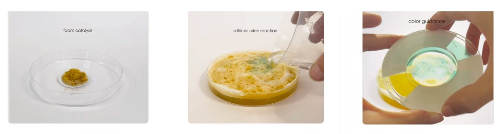
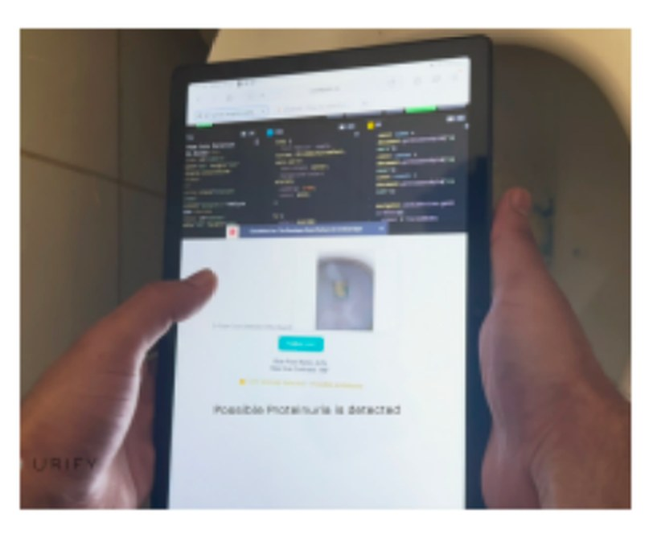

Chronic kidney disease is silent for years, so people never go and get checked. Every existing test asks them to do something new, and they do not.
Founded it alone. Ran the research, met nephrologists, learned the lab chemistry, built the team, and hid the test inside a habit people already have: cleaning the toilet.
UK James Dyson Award runner-up and global top 20. Presented to NHS North West London ICHP and at TEDx. Covered by Reuters and Dezeen.
Project overview
Urify is my current venture, solo-founded and incubated at Imperial College London's We Innovate programme. It's a simple, low-cost, colour-changing test designed to flag possible early signs of kidney disease from a routine urine check, turning a screening that normally requires a lab visit into something people can do for themselves, early enough to act on.
Kidney disease is often silent until it's advanced. Urify's premise is that catching an early warning sign shouldn't require special equipment or a clinic appointment. It should be as simple and legible as a colour change.
As solo founder I lead a cross-functional team spanning medicine and engineering, translating complex clinical research into a scalable product and business model.
Why a cleaning tablet, and not a test
This is the part that decided the product's shape. I worked it out before I made anything.
The disease hides, so the person never goes
Chronic kidney disease is quiet for years. A person can lose a lot of kidney function and feel completely fine. No pain, no warning, nothing to point at.
That matters more than it sounds. People go to a doctor because something feels wrong. If nothing feels wrong, they do not go. The disease is easy enough to detect. The hard part is catching it, because the person is never in the room.
The disease is silent for years.
The person has no symptoms.
So they never go and get checked.
The screening never happens at all.
So the existing answers all miss
I went through what already exists. Each one works, and each one still fails, for the same reason. They all ask the person to do something new.
You have to buy one, and they are expensive. The people who buy them are already the people who watch their health. The person I need has not thought about their kidneys once.
You have to buy them, remember them, and use them. Before any of that, you have to suspect something is wrong. If you had a reason to suspect it, you would already have gone to a doctor.
You have to book it, travel to it, and give up a morning. People do that when they feel ill. This disease does not make you feel ill.
The evidence: even a free test posted to your door does not get used
I wanted to know how small the friction has to be before people stop. So I looked at the strongest case I could find. The NHS YouScreen trial in London posted free cervical screening kits to women who had not come in for their smear test. The kit is free. It arrives at the house. You take the sample yourself. Nobody has to book it, travel for it, or see a nurse.
That number changed how I thought about the problem. Cost and access had already been removed here. What was left was the act itself: open it, do it, package it, post it. Four small steps, and around seven in eight people stopped.
So I stopped treating friction as something to reduce. Any friction at all is too much. The test cannot ask for four steps, or one step. It has to ask for none.
The same trial makes the point twice over. When a nurse handed the kit to a woman in person, at an appointment she was already at, uptake was far higher than when it arrived in the post. Nothing about the test changed. Only the moment it reached her did.
So the test has to hide inside a habit people already have
So it has to sit inside something people already do, without thinking, and without deciding to.
Then I looked for the habit. Almost everyone already buys something to clean the toilet. They buy it without a thought, they use it without a thought, and they replace it when it runs out. Nobody has to be persuaded.
So Urify is a toilet cleaning tablet that gives you a health prompt. You buy it because you want a clean toilet. It does that job properly. While it does, it watches for an early sign of kidney disease, and it tells you by changing colour. The prompt is small and it is yours to act on. You never signed up for a health product, and your week stays exactly the same.
Six months, zero to one
I started with a research question and no product. Six months later I was presenting to the NHS. Here is what happened in between, in order.
-
01
Research
I read the clinical literature on chronic kidney disease. The pattern was clear. The disease is quiet for years, and most people find out late. Screening exists, but it needs a clinic. So the gap sat in access, and detection was never the hard part.
-
02
I went and asked nephrologists
A medical product needs more than reading. I arranged meetings with kidney specialists and asked them what they would actually trust. They told me which marker matters, what a false positive costs a patient, and where a home test would fit in a real care pathway. That changed the product.
-
03
I learned the chemistry
I trained as a designer, so I had to become useful in a lab first. I learned the reaction the test depends on, then made and remade the tablet myself until the colour change was clear enough for a person to read without a chart.

My own process shots from the lab. Foam catalysis, then the reaction against artificial urine, then reading the colour. I ran this loop over and over until the green was obvious to someone who had never seen the test before. -
04
I built the team
One person cannot do medicine and engineering at once. I brought in medical and engineering collaborators, and I kept the direction. My job was to hold the product together while each of them went deep.
-
05
I built a camera app to read the result
Colour is hard for some people to judge. Lighting changes it, and so does eyesight. So I built a small companion app that reads the tablet through the phone camera. It uses computer vision to compare what it sees against the reference colours, and then it says in words what it found. The person gets a plain answer, and never has to make the call themselves.

The companion app running. It reads the test through the camera and returns a sentence: "Possible Proteinuria is detected". -
06
I presented to the NHS
At the end of the six months I presented Urify to the NHS North West London ICHP team. That is the audience that decides whether a screening idea is worth anything. Getting in front of them was the point of the whole six months.
Taking it to a community, before taking it to a clinic
The whole argument above says screening fails when it waits for people to come to it. So I went to where people already gather.
I partnered with the London GAA community, the Gaelic games clubs that a large part of the city's Irish population belongs to. Clubs meet weekly. People turn up for training and for matches, and they already trust the club. That is a room I could walk into, and a hospital is not.
What I ran there
- Education sessions. Most people have never heard of chronic kidney disease, and almost nobody knows it is silent. I ran sessions explaining what the disease does, why it stays hidden, and what an early sign looks like. The point was to make the problem real before showing anyone a product.
- Listening, and writing it down. I collected what came back in the room: what people already believed about kidney health, what they would actually use at home, and what put them off. That went straight into the requirements, so the tablet answered real objections rather than assumed ones.
- Scoping a pilot. I worked with the community on what a first trial could look like. Who takes part, how the tablets reach them, what a result should say, and what we would need to see before calling it a success.
Working this way changed my job on the project. It stopped being about designing the object, and became about running a plan across a lot of people who do not report to me: clinicians, chemists, engineers, a community organisation and its members. Everyone needed a different version of the same story, and the schedule only held because someone kept it in one piece.
Product management & strategy
- Product delivery: coordinated resources to lead a cross-functional team of medical and engineering collaborators, turning clinical research into a working product and business model
- Roadmap & direction: conducted market and business analysis to define product direction, feature prioritisation and user requirements. I decided what got built first, and what waited
- Research into requirements: turned interviews, community sessions and clinical conversations into specifications the team could build against, then iterated with them on each version
- Trade-offs: weighed quick wins against the slower work. Making the colour readable without a chart shipped early because it decided whether the product worked at all; the companion app came later, once the chemistry was stable
- User-centric design: built and engaged an early-user community together with patients, charities and NHS experts to drive agile product iteration
- Taking it out: prepared and delivered the material for each audience, from the NHS North West London ICHP team to a TEDx stage to the community sessions, and kept the story consistent across all of them
Validation & funding
Urify won 2nd prize at Idea to Impact, was named an Imperial We Innovate semi-finalist, and ranked Global Top 20 for the James Dyson Award alongside a UK national runner-up placing. I formulated the data-driven business case that went on to secure non-dilutive funding for the venture.
Stakeholders & partnerships
I've been invited to explore a joint pilot programme with the world's largest semiconductor manufacturer to help scale Urify's hardware capabilities, and to present the product to the NHS and at TEDx. Urify has been featured in global media including Reuters and Dezeen.

Recognition
The product itself is live at urify.co.